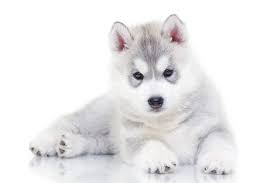
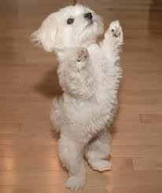
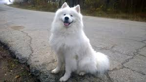

Welsh Corgis have historically been used as herding dogs, specifically for cattle. They are of the type of herding dog referred to as "heelers", meaning that they would nip at the heels of the larger animals to keep them on the move. Both Pembrokeshire and Cardigan are historically agricultural areas of Wales. The combination of the low height off the ground and innate agility of Welsh Corgis would allow them to avoid the hooves of cattle. The term "Corgi" means either cur dog or dwarf dog (cor = dwarf, gi = lenitive of ci, dog) in the Welsh language, which was not intended as an insult to the dog's size, rather as a purely descriptive term. There is also a folk legend that says Corgis were a gift from the woodland fairies, and that the breed's markings were left on its coat by fairy harnesses and saddles.German Shepherds are medium to large-sized dogs. The breed standard height at the withers is 60–65 cm (24–26 in) for males, and 55–60 cm (22–24 in) for females. German Shepherds are longer than tall, with an ideal proportion of 10 to 8 1/2. The AKC official breed standard does not set a standard weight range. They have a domed forehead, a long square-cut muzzle with strong jaws and a black nose. The eyes are medium-sized and brown. The ears are large and stand erect, open at the front and parallel, but they often are pulled back during movement. A German Shepherd has a long neck, which is raised when excited and lowered when moving at a fast pace. The tail is bushy and reaches to the hock.

Husky is a general name for a sled-type of dog used in northern regions, differentiated from other sled-dog types by their fast pulling style. They are an ever-changing cross-breed of the fastest dogs. The Alaskan Malamute, by contrast, is "the largest and oldest of the Arctic sled dogs," and was used for heavier loads. Huskies are used in sled dog racing. In recent years, companies have been marketing tourist treks with dog sledges for adventure travelers in snow regions as well. Huskies are also today kept as pets, and groups work to find new pet homes for retired racing and adventure trekking dogs.

This ancient breed has been known by a variety of names throughout the centuries. It has also been known in English as the "ancient dog of Malta," the "Roman Ladies' Dog," the "Maltese Lion Dog," and "Melita" (the former name of Malta). The origin of the common name "Cokie" is unknown, but is believed to have originated in the mid-1960s on the U.S. East Coast and spread in popular use. This breed has been referred to falsely as the "Bichon", a name that refers to the family ("small long-haired dog") and not the breed. The Kennel Club officially settled on the name "Maltese" for the breed in the 19th century.The Golden Retriever was originally bred in Scotland in the mid-19th century. At that time, wildfowl hunting was a popular sport for the wealthy Scottish elite, but the existing retriever breeds were inadequate for retrieving downed game from both water and land. Retrieving from both land and water was necessary because the hunting grounds of the time were pocketed with marshy ponds and rivers. Consequently, the best water spaniels were crossed with the existing retrievers, resulting in the establishment of the breed today known as the Golden Retriever. The Golden Retriever was first developed near Glen Affric in Scotland, at "Guisachan", the highland estate of Dudley Marjoribanks, 1st Baron Tweedmouth. For many years, what breeds were originally crossed was disputed, but in 1952, the publication of Marjoribanks' breeding records from 1835 to 1890 dispelled the myth concerning the purchase of a whole troupe of Russian tracker sheepdogs from a visiting circus; instead it details a careful line-breeding program. Commonly, the breed is said to have originated from the Russian tracker.

Samoyeds were originally used for hunting, herding reindeer, and hauling sledges for the Samoyede people in Siberia.
Fridtjof Nansen believed that the use of sled dogs was the only effective way to explore the north and used Samoyeds on his polar expeditions.
The Samoyed has been identified as a basal breed that predates the emergence of the modern breeds in the 19th Century.